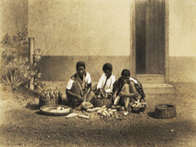
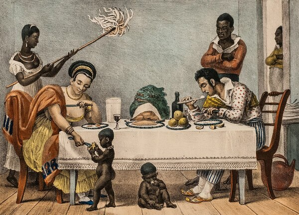
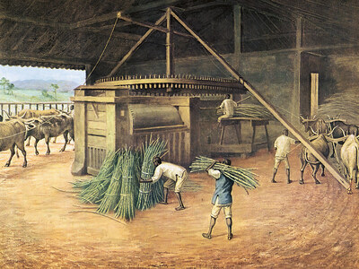
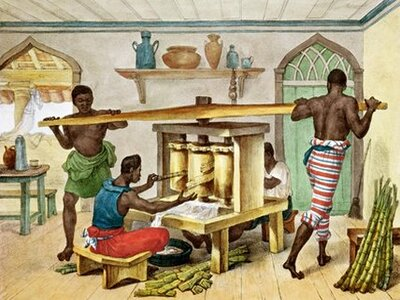

Utilidade da mandioca

A farinha de mandioca era a base da alimentação dos escravos. Na maioria dos engenhos, a comida do escravo era deficiente e de má qualidade. A base da alimentação dos escravos nas senzalas dos engenhos consista em farinha de mandioca e o angu de milho. Em alguns, eram alimentados exclusivamente com angu de milho. Agradava-lhes mais o pirão do que a farofa. No Império, a comida do escravo era igualmente a mesma das classes mais humildes e pobres. Muito mais carne-seca do que carne fresca.
A mandioca era utilizada principalmente pela facilidade de sua produção e também pela sua riqueza em substâncias importantes para a sobrevivência, como potássio, fibras, vitamina C e o resveratrol. O transporte e armazenamento da mandioca também era uma grande vantagem em sua produção; quando torrada e acondicionada a farinha de mandioca poderia ser transporta com muita facilidade.
| Como se relaciona com a escravidão | Como se relaciona com o engenho | Como se relaciona com a açúcar |
|  |  |  |
| Escravos eram alimentando com a mandioca pela boa energia fornecida | O engenho era operado por escravos e seu principal alimento era a mandioca | Os escravos que trabalhavam nos engenhos eram alimentando mandioca |
| Leia mais | Leia mais | Leia mais |